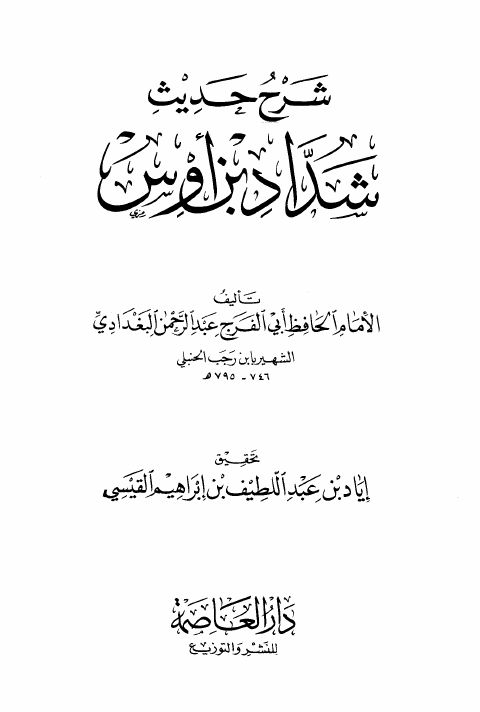

Downloads need an internet connection.
شرح حديث شداد بن أوس إذا كنز الناس الذهب والفضة
Authors: ابن رجب الحنبلي
Editors: إياد بن عبد اللطيف القيسي
Publishers: دار العاصمة
**▫️ العنوان: شرح حديث شداد بن أوس إذا كنز الناس الذهب والفضة** ▪️ المؤلف: #عبد_الرحمن_البغدادي_بن_رجب_الحنبلي ▫️ المحقق: #إياد_بن_عبد_اللطيف_القيسي ▪️ الناشر: #دار_العاصمة_للنشر_والتوزيع ▫️ تاريخ النشر: 1419هـ 1998م ▪️ بلد النشر: الرياض، #السعودية ▫️ الطبعة: 1 ▪️ عدد الأجزاء: 1 ▫️ الصفحات: 72 ▪️ نوع الوعاء: #كتاب ▫️ التصنيف الرئيسي: #الحديث_وعلومه ▪️ التصنيف الفرعي: #باقي_مجموعات_الحديث ۪